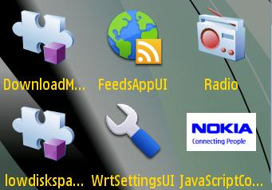
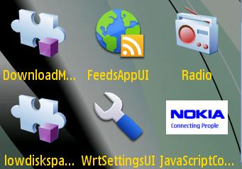

JavaScript Console - Example Widget Documentation
About this document
This document describes the JavaScript Console Example Widget application for Nokia Symbian^3 SDK.
Read this document if you are a web developer, testing professional, or the product manager working on this product.
About this Product
Widgets are lightweight Web applications developed using the same well-known standards-based Web technologies – AJAX, CSS, HTML and JavaScript – used to
create Web pages. Developers can use it as a reference and testers can use it to test the relevant functionality. widget is intended for Nokia Symbian^3 SDK. Developers should be able to develop professional applications.
Product intent
Example Widget Application is designed to run on Nokia Symbian SDK. It will be designed such that a developer takes it as a reference to create useful applications for any functionality supported on SDK. It will be designed to let the testers to test the functionality
Product limitations
Example widget is not intended to give full featured implementation. This example will implement the WRT 1.0 APIs. It runs a javascript with errors and shows the error either on console or log to a file depending on the option set in browser
Specification
The example widget uses the WRT 1.0 API.
The Web Runtime (WRT) environment supports the following Internet technology standards:
HTML 4.01
The basic HTML standards are supported.
XHTML 1.0
The basic XHTML standards are supported.
CSS Level 2 revision 1 (CSS 2.1)
JavaScript 1.5 (ECMA-262 3rd Edition)
The standard JavaScript features are supported. The WRT environment also provides some additional features that are mobile device specific.
The following additional JavaScript features are supported in the WRT environment:
- Utilizing the underlying user input features of the mobile device to interact with the user
- Self-updating widgets
- UI navigation using either a cursor or tabs
- Rotating the screen: portrait and landscape orientation
- Launching Symbian mobile applications
- Localization framework with automatic detection of the device language settings
- Getting information on physical device functionality and controlling such features.
Example Description
The JavaScript Console widget demonstrates the javascript console support given by the SDK. The widget opens up the browser for the user to set the javascript console options. The widget also allows the user to run a script which has errors and this script is already given with the widget. On running the script with errors, the user can either see the error on console or in a log file according to the option set in the browser java script console options.
Use Cases
 
